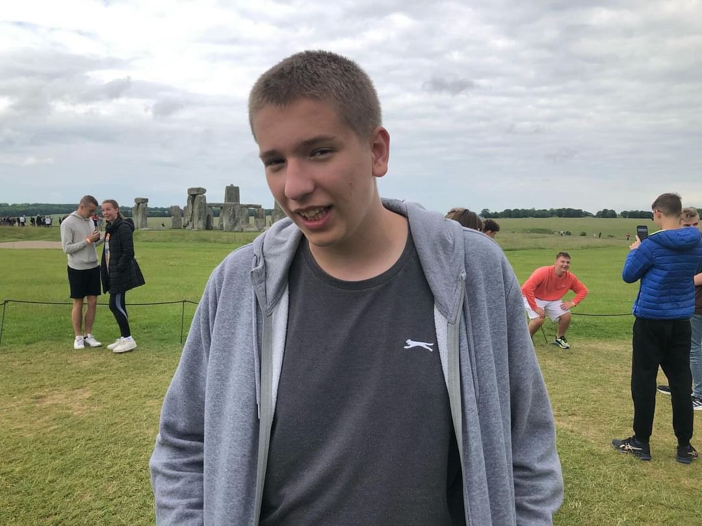
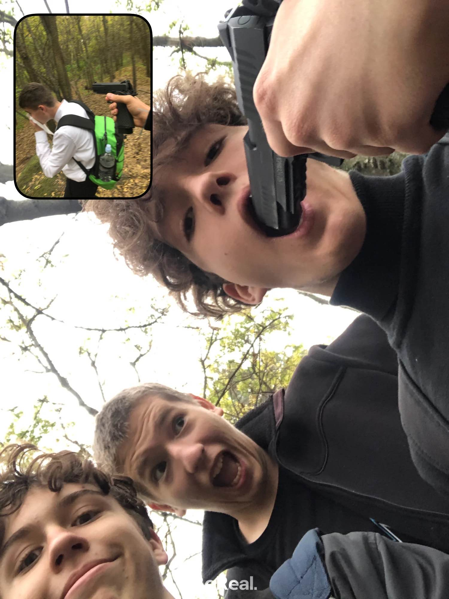
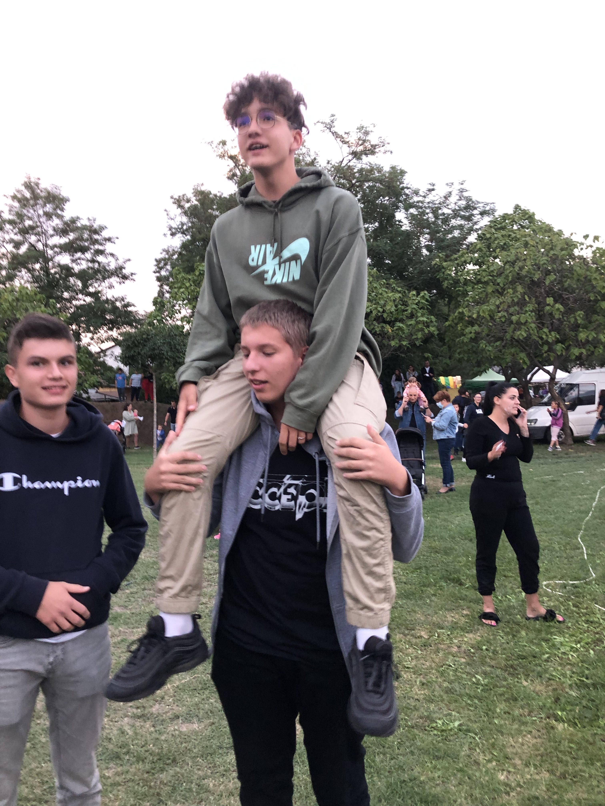
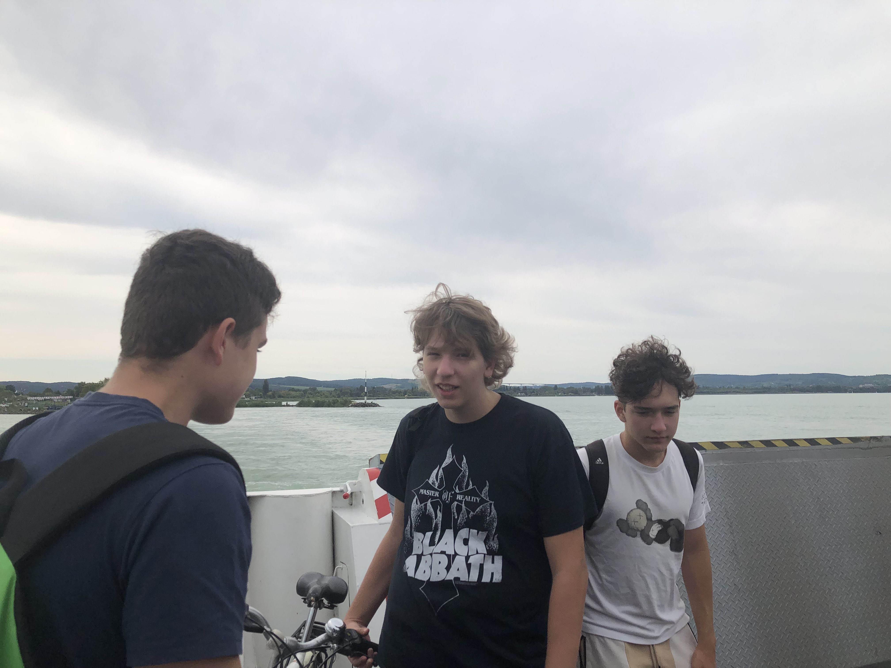

Karinthy 0.
Már az iskola elején elég egyértelmű volt, hogy Bobesz kicsit más mint a többiek, de itt még normálisan nézett ki, ez a későbbiekben fontos lesz

aztán következett az angliai út, egy szuper izgalmas kaland, fontos megfigyelni, hogy bobesz outfitje semmit sem változott (Majdnem kitakarja az egész Stonehenge-t)
Bob igazából összegezhető egy képen

Karinthy 9.
Életünk legeslegeslegeslegjobb élménye Pápa és az ahhoz vezető filmkészítés
Bókay-kert valaha látott legnagyobb koncertjén is részt vettünk
Karinthy 10.
Közös nyaralás, életünk legrosszabb döntése, hogy mozogjunk ilyenkor, valszeg még aznap este "kicsúszott"
